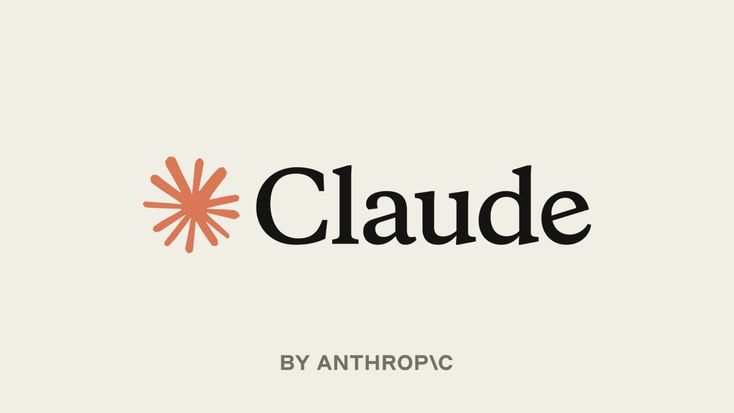

⭐ مقال مميز
الذكاء الاصطناعي
ما هو Claude AI بالعربي؟ شرح كلود للمبتدئين وطريقة استخدامه
تعرف على Claude AI واستخداماته في الكتابة والبرمجة وتحليل المعلومات والملفات، وما الذي يميزه كمساعد للذكاء الاصطناعي.
اقرأ المقال ←